%%{init: {"theme": "base", "themeVariables": {"primaryColor": "#eef4fb", "primaryTextColor": "#0f2c52", "primaryBorderColor": "#40658c", "lineColor": "#475569", "textColor": "#0f2c52", "clusterBkg": "#f8fafc", "clusterBorder": "#94a3b8", "edgeLabelBackground": "#ffffff", "fontFamily": "Arial, sans-serif"}}}%%
flowchart LR
subgraph F["Fuentes"]
F1["F1 · Afluencia Metro<br/>CSV portal"]
F2["F2 · Afluencia Metrobús<br/>CSV portal"]
F3["F3 · GTFS<br/>ZIP portal"]
F4["F4 · Festivos<br/>API REST"]
F5["F5 · Clima<br/>API REST"]
end
subgraph S["metro_staging · datos crudos"]
S1[stg_metro_afluencia]
S2[stg_metrobus_afluencia]
S3[stg_gtfs_stops<br/>stg_gtfs_routes]
S4[stg_festivos_nager]
S5[stg_clima_openmeteo]
end
subgraph D["metro_dw · esquema estrella"]
H1[(hechos_afluencia_metro)]
H2[(hechos_afluencia_metrobus)]
DIM["dim_fecha · dim_linea<br/>dim_estacion · dim_clima"]
end
subgraph M["metro_mart · vistas OLAP"]
V["v_p1 … v_p5"]
end
F1 --> S1
F2 --> S2
F3 --> S3
F4 --> S4
F5 --> S5
S1 & S2 & S3 & S4 & S5 -. "ETL en E2" .-> D
D --> M
classDef fuente fill:#f1f5f9,stroke:#64748b,color:#0f2c52
classDef staging fill:#e8f1fc,stroke:#40658c,color:#0f2c52
classDef dw fill:#e8f5ee,stroke:#397454,color:#163d2a
classDef mart fill:#fff4d9,stroke:#98701d,color:#59420f
class F1,F2,F3,F4,F5 fuente
class S1,S2,S3,S4,S5 staging
class H1,H2,DIM dw
class V mart
style F fill:#f8fafc,stroke:#94a3b8,color:#0f2c52
style S fill:#f3f7fd,stroke:#40658c,color:#0f2c52
style D fill:#f2f9f5,stroke:#397454,color:#163d2a
style M fill:#fffaf0,stroke:#98701d,color:#59420f
2. Arquitectura de tres capas en BigQuery
Entrega E1 - Arquitectura del Data Warehouse
2.1 Las tres capas
Las flechas continuas indican la carga cruda y la dependencia de las vistas; las discontinuas representan el ETL pendiente de E2. En E1 el DW está vacío y las vistas consultan ese esquema, sin implicar que ya existan datos transformados.
| Capa | Dataset | Contenido | Estado en E1 |
|---|---|---|---|
| Staging | metro_staging |
Datos crudos, tal como vienen de cada fuente. Todas las columnas de los CSV se cargan como STRING para no perder nada: los ceros, los 'NaN' y el texto mal codificado se conservan |
Cargado |
| DW | metro_dw |
Esquema estrella: 2 hechos y 4 dimensiones, creados con DDL | Creado y vacío (se puebla en E2) |
| DataMart | metro_mart |
Una vista por pregunta de E0, con lógica OLAP, sobre el esquema estrella | Vistas creadas; devuelven 0 filas hasta poblar el DW |
Los tres datasets están en la misma ubicación (US), así que las consultas pueden cruzar capas. Se crearon con sql/00_datasets.sql.
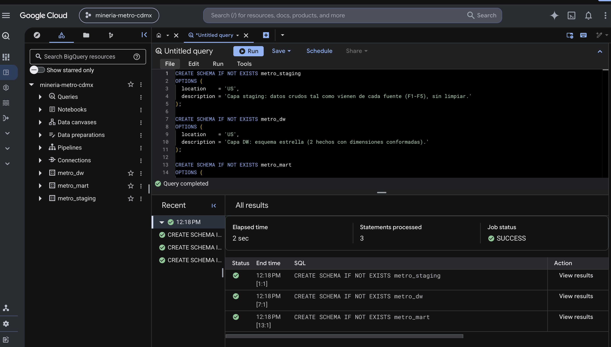
00_datasets.sql: 3 sentencias, estado SUCCESS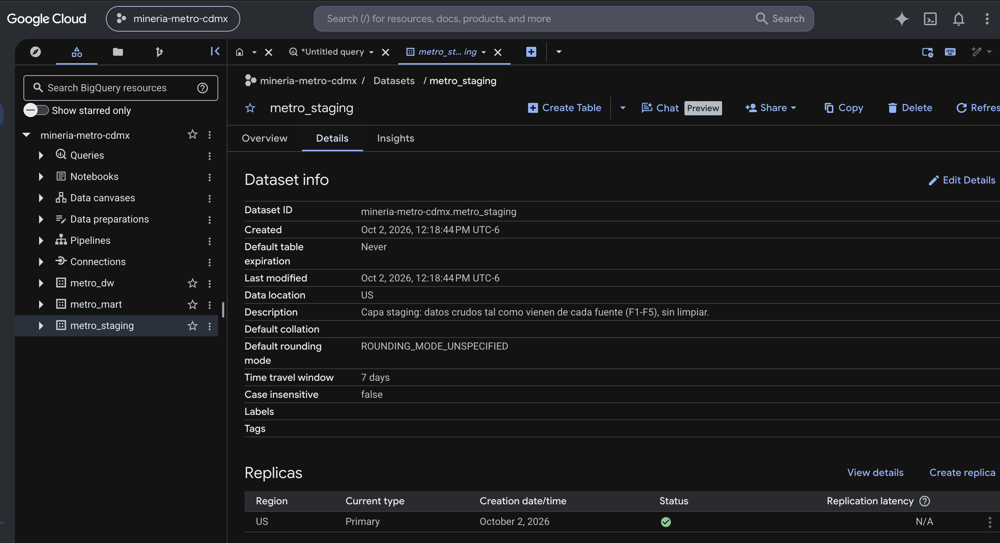
metro_staging · Data location: US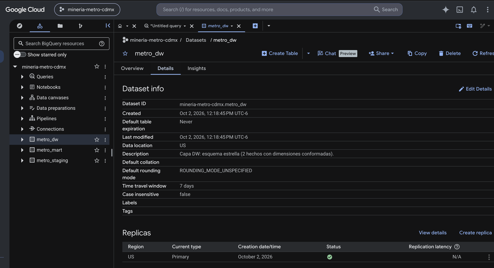
metro_dw · Data location: US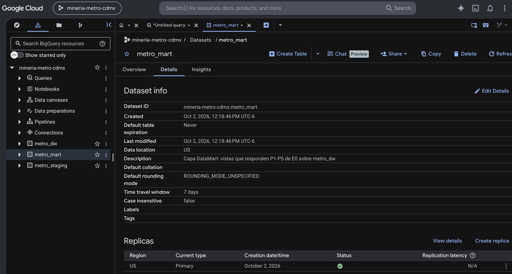
metro_mart · Data location: US2.2 Capa staging
Cada tabla corresponde a una fuente del catálogo. Se cargó desde la consola de BigQuery (Crear tabla → Subir) con el esquema escrito a mano en lugar de autodetectado.
| Tabla | Fuente | Archivo cargado | Filas | Fecha de carga |
|---|---|---|---|---|
stg_metro_afluencia |
F1 | CSV completo del portal (59.9 MB) | 1,180,920 | 2026-10-02 |
stg_metrobus_afluencia |
F2 | CSV completo del portal (2.1 MB) | 53,732 | 2026-10-02 |
stg_gtfs_stops |
F3 | stops.txt del ZIP GTFS |
11,362 | 2026-10-02 |
stg_gtfs_routes |
F3 | routes.txt del ZIP GTFS |
301 | 2026-10-02 |
stg_festivos_nager |
F4 | JSONL generado por staging/descargar_apis.py |
156 | 2026-10-02 |
stg_clima_openmeteo |
F5 | CSV generado por staging/descargar_apis.py |
6,056 | 2026-10-02 |
Los valores se cargan sin tocar. Hay solo dos ajustes de forma, ambos impuestos por BigQuery:
- F4: la API devuelve un arreglo JSON por año y BigQuery requiere un objeto por línea (JSONL).
- F5: los encabezados originales traen espacios, paréntesis y
°(precipitation_sum (mm),temperature_2m_max (°C)), que no son válidos en un nombre de columna. Se omite la fila de encabezado y las columnas se nombran por posición, conservando la unidad en el nombre:precipitation_sum_mm,temperature_2m_max_c.
Evidencia de carga
Cada tabla se muestra con su esquema (a la izquierda) y su vista previa (a la derecha). El contador de la vista previa confirma el número de filas del catálogo.
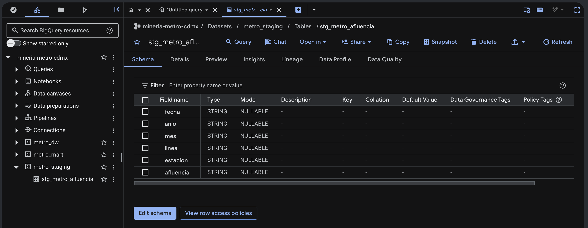
stg_metro_afluencia
stg_metro_afluencia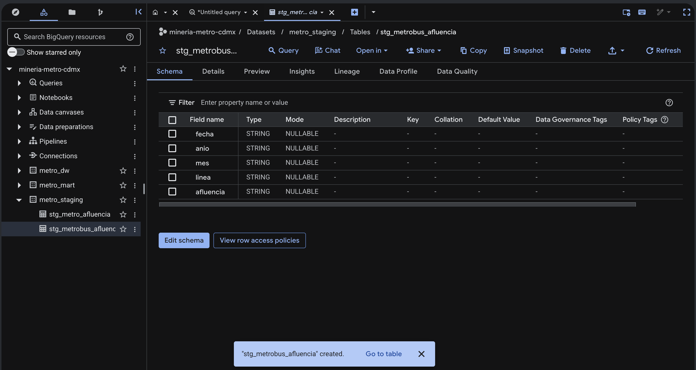
stg_metrobus_afluencia
stg_metrobus_afluencia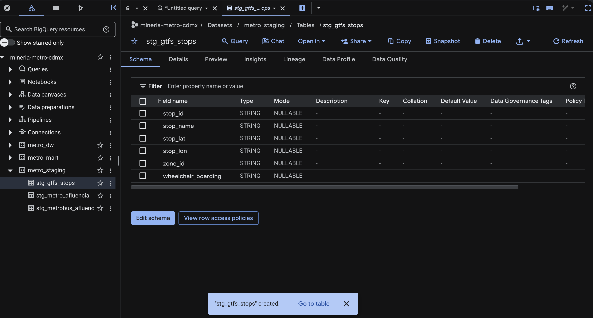
stg_gtfs_stops
stg_gtfs_stops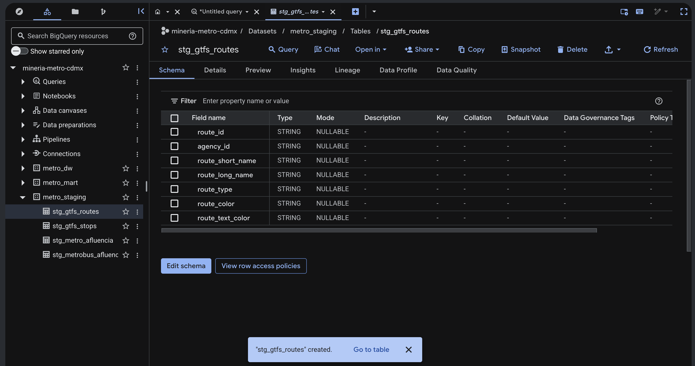
stg_gtfs_routes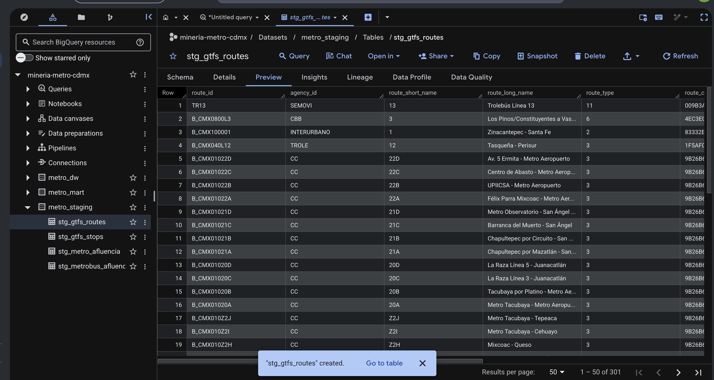
stg_gtfs_routes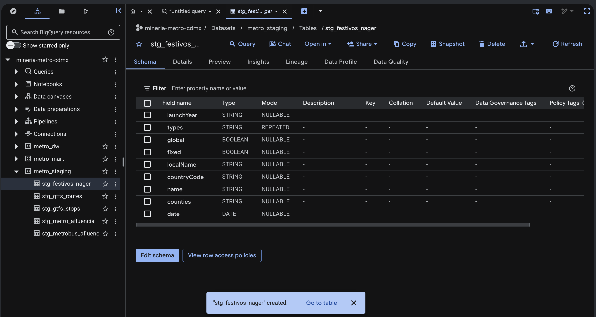
stg_festivos_nager
stg_festivos_nager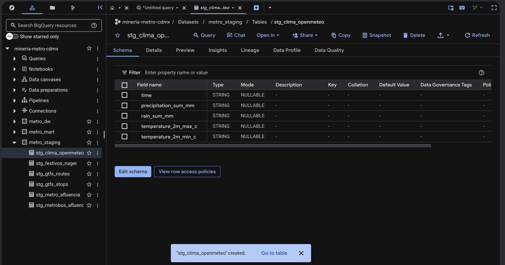
stg_clima_openmeteo
stg_clima_openmeteo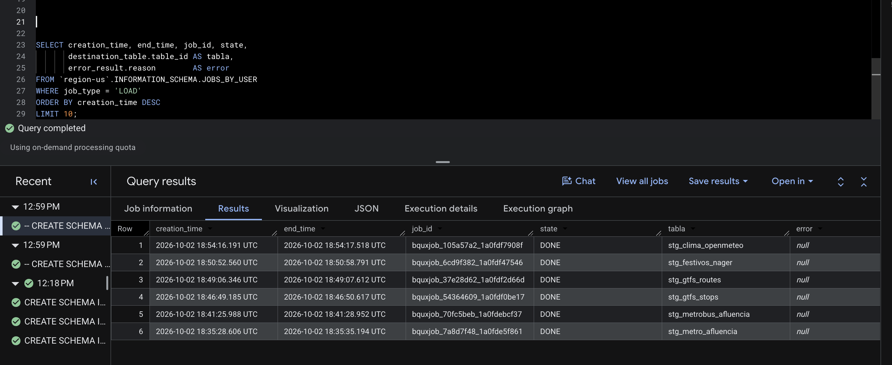
INFORMATION_SCHEMA.JOBS_BY_USER)
Las consultas de perfilado, que confirman en BigQuery lo que encontramos en el portal, están en sql/01_perfilado_staging.sql.
2.3 Capa DW
El esquema estrella, su grano y el DDL completo están en Esquema estrella. Las tablas se crearon con sql/ddl_dw.sql y quedaron vacías, como pide el alcance de E1.
2.4 Capa DataMart
Hay una vista por pregunta de E0. P1 y P3 tienen dos vistas cada una porque combinan dos lecturas distintas. El código completo está en sql/consultas_mart.sql.
| Vista | Pregunta | Operador OLAP | Qué devuelve |
|---|---|---|---|
v_p1_rollup_linea_dia |
P1 | ROLLUP | Afluencia media por línea y día de la semana, con subtotal por línea y total de la red |
v_p1_picos_vs_base |
P1 | Ventanas (AVG OVER, RANK) |
Índice del promedio de cada estación por día de la semana contra su base y estaciones con rango ≤ 20 para cada día de la semana (puede haber más de 20 por empates) |
v_p2_dataset_pronostico |
P2 | Ventanas (LAG, AVG … ROWS BETWEEN) |
Conjunto de entrenamiento: rezagos t−1 y t−7, línea base ingenua de 4 semanas (la del criterio de éxito) y etiqueta de alta demanda |
v_p3_perfil_semanal_estacion |
P3 | PIVOT + ventana | Perfil semanal normalizado por estación: la matriz de entrada del clustering |
v_p3_correlacion_metro_metrobus |
P3 | Agregación CORR |
Correlación diaria entre cada línea del Metro y cada línea del Metrobús |
v_p4_anomalias_por_causa |
P4 | Ventanas + GROUPING SETS | Estación-días con |z| ≥ 3 contra las 8 semanas previas, contados por festivo, lluvia y estado de servicio |
v_p5_absorcion_cierre_l1 |
P5 | CUBE | Afluencia media diaria por sistema, línea y periodo (antes, durante y después del cierre de L1) |
-- =====================================================================
-- E1 · Paso 5: DataMart (metro_mart). Una vista por pregunta de E0,
-- construidas sobre el esquema estrella de metro_dw.
-- Las tablas del DW están vacías en E1: las vistas devuelven 0 filas,
-- pero deben crearse sin error (validez sintáctica y semántica).
-- Operadores OLAP usados: ROLLUP (P1), funciones de ventana (P1, P2, P4),
-- PIVOT (P3), GROUPING SETS (P4) y CUBE (P5).
-- =====================================================================
-- ---------------------------------------------------------------------
-- P1 · ¿Qué combinaciones de línea, estación y día de la semana concentran
-- los picos de afluencia y qué tan lejos están de su nivel base?
-- (a) ROLLUP: afluencia media diaria por línea y día de la semana,
-- con subtotales por línea y total de la red.
-- ---------------------------------------------------------------------
CREATE OR REPLACE VIEW metro_mart.v_p1_rollup_linea_dia AS
-- Las filas con nombre_linea NULL son el total de la red; las filas con
-- dia_semana_num NULL son el subtotal de cada línea.
SELECT
l.nombre_linea,
f.dia_semana_num,
SUM(h.afluencia) AS afluencia_total,
COUNT(DISTINCT h.fecha_key) AS dias_observados,
SAFE_DIVIDE(SUM(h.afluencia),
COUNT(DISTINCT h.fecha_key)) AS afluencia_media_diaria
FROM metro_dw.hechos_afluencia_metro AS h
JOIN metro_dw.dim_linea AS l ON l.linea_key = h.linea_key
JOIN metro_dw.dim_fecha AS f ON f.fecha_key = h.fecha_key
WHERE f.anio >= 2022
AND NOT h.es_registro_cero
GROUP BY ROLLUP (l.nombre_linea, f.dia_semana_num);
-- (b) Ventanas: índice de cada estación-día contra su propia base
-- (media de la estación en todos los días) y ranking por día.
CREATE OR REPLACE VIEW metro_mart.v_p1_picos_vs_base AS
WITH media_por_dia AS (
SELECT
l.nombre_linea,
e.estacion_nk,
e.nombre_oficial,
f.dia_semana_num,
f.nombre_dia,
AVG(h.afluencia) AS media_dia
FROM metro_dw.hechos_afluencia_metro AS h
JOIN metro_dw.dim_estacion AS e ON e.estacion_key = h.estacion_key
JOIN metro_dw.dim_linea AS l ON l.linea_key = h.linea_key
JOIN metro_dw.dim_fecha AS f ON f.fecha_key = h.fecha_key
WHERE f.anio >= 2022
AND NOT h.es_registro_cero
GROUP BY l.nombre_linea, e.estacion_nk, e.nombre_oficial, f.dia_semana_num, f.nombre_dia
),
con_indices AS (
SELECT
*,
SAFE_DIVIDE(media_dia,
AVG(media_dia) OVER (PARTITION BY estacion_nk)) AS indice_vs_base,
RANK() OVER (PARTITION BY dia_semana_num ORDER BY media_dia DESC) AS rank_en_el_dia
FROM media_por_dia
)
SELECT *
FROM con_indices
WHERE rank_en_el_dia <= 20;
-- ---------------------------------------------------------------------
-- P2 · ¿Es posible anticipar con 24 h la afluencia diaria por estación y
-- clasificar los días de alta demanda?
-- Conjunto de entrenamiento: rezagos (ventanas LAG), línea base ingenua
-- (media del mismo día de la semana en las 4 semanas previas, requerida
-- por el criterio de éxito de E0) y etiqueta de alta demanda.
-- Umbral provisional 1.20 x base: se fija con el resultado de P1 en E2.
-- ---------------------------------------------------------------------
CREATE OR REPLACE VIEW metro_mart.v_p2_dataset_pronostico AS
WITH serie AS (
SELECT
h.estacion_key,
e.estacion_nk,
f.fecha,
f.dia_semana_num,
f.es_festivo_oficial,
f.es_dia_quincena,
f.es_semana_santa,
c.precipitacion_mm,
e.estado_servicio,
h.afluencia
FROM metro_dw.hechos_afluencia_metro AS h
JOIN metro_dw.dim_estacion AS e ON e.estacion_key = h.estacion_key
JOIN metro_dw.dim_fecha AS f ON f.fecha_key = h.fecha_key
LEFT JOIN metro_dw.dim_clima AS c ON c.clima_key = h.clima_key
),
con_rezagos AS (
SELECT
*,
LAG(afluencia, 1) OVER (PARTITION BY estacion_nk ORDER BY fecha) AS afluencia_t_menos_1,
LAG(afluencia, 7) OVER (PARTITION BY estacion_nk ORDER BY fecha) AS afluencia_t_menos_7,
AVG(afluencia) OVER (
PARTITION BY estacion_nk, dia_semana_num
ORDER BY fecha
ROWS BETWEEN 4 PRECEDING AND 1 PRECEDING
) AS base_ingenua_4sem
FROM serie
)
SELECT
*,
SAFE_DIVIDE(ABS(afluencia - base_ingenua_4sem), afluencia) AS error_abs_pct_base,
afluencia > 1.20 * base_ingenua_4sem AS es_alta_demanda
FROM con_rezagos
WHERE estado_servicio = 'operando';
-- ---------------------------------------------------------------------
-- P3 · ¿Cuántos perfiles de demanda hay y qué alternativas existen?
-- (a) PIVOT: perfil semanal de cada estación (participación de cada día
-- de la semana en su demanda); es la matriz de entrada del clustering.
-- ---------------------------------------------------------------------
CREATE OR REPLACE VIEW metro_mart.v_p3_perfil_semanal_estacion AS
WITH media AS (
SELECT
e.estacion_nk,
e.linea_codigo,
f.dia_semana_num,
AVG(h.afluencia) AS media_dia
FROM metro_dw.hechos_afluencia_metro AS h
JOIN metro_dw.dim_estacion AS e ON e.estacion_key = h.estacion_key
JOIN metro_dw.dim_fecha AS f ON f.fecha_key = h.fecha_key
WHERE f.anio >= 2022
AND NOT h.es_registro_cero
GROUP BY e.estacion_nk, e.linea_codigo, f.dia_semana_num
),
participacion AS (
SELECT
estacion_nk,
linea_codigo,
dia_semana_num,
SAFE_DIVIDE(media_dia, SUM(media_dia) OVER (PARTITION BY estacion_nk)) AS part
FROM media
)
SELECT *
FROM participacion
PIVOT (ANY_VALUE(part) FOR dia_semana_num IN
(1 AS lun, 2 AS mar, 3 AS mie, 4 AS jue, 5 AS vie, 6 AS sab, 7 AS dom));
-- (b) Complementariedad Metro ↔ Metrobús a nivel línea-día (ajuste de P3:
-- Metrobús solo publica afluencia por línea). Correlación diaria.
CREATE OR REPLACE VIEW metro_mart.v_p3_correlacion_metro_metrobus AS
WITH metro AS (
SELECT fecha_key, linea_key, SUM(afluencia) AS afluencia
FROM metro_dw.hechos_afluencia_metro
GROUP BY fecha_key, linea_key
),
metrobus AS (
SELECT fecha_key, linea_key, afluencia
FROM metro_dw.hechos_afluencia_metrobus
WHERE afluencia IS NOT NULL
)
SELECT
lm.nombre_linea AS linea_metro,
lb.nombre_linea AS linea_metrobus,
CORR(m.afluencia, b.afluencia) AS correlacion_diaria,
COUNT(*) AS dias_en_comun
FROM metro AS m
JOIN metrobus AS b ON b.fecha_key = m.fecha_key
JOIN metro_dw.dim_linea AS lm ON lm.linea_key = m.linea_key
JOIN metro_dw.dim_linea AS lb ON lb.linea_key = b.linea_key
JOIN metro_dw.dim_fecha AS f ON f.fecha_key = m.fecha_key
WHERE f.anio >= 2022
GROUP BY lm.nombre_linea, lb.nombre_linea;
-- ---------------------------------------------------------------------
-- P4 · ¿Qué días son anomalías y qué proporción se explica por eventos
-- identificables (festivos, lluvia, cierres)?
-- Ventana: z-score contra el mismo día de la semana en las 8 semanas
-- previas. GROUPING SETS: conteo de anomalías por cada posible causa.
-- ---------------------------------------------------------------------
CREATE OR REPLACE VIEW metro_mart.v_p4_anomalias_por_causa AS
WITH serie AS (
SELECT
h.estacion_key,
f.fecha,
f.dia_semana_num,
f.es_festivo_oficial,
c.categoria_lluvia,
e.estado_servicio,
h.afluencia,
AVG(h.afluencia) OVER ventana AS media_ref,
STDDEV_SAMP(h.afluencia) OVER ventana AS sd_ref
FROM metro_dw.hechos_afluencia_metro AS h
JOIN metro_dw.dim_fecha AS f ON f.fecha_key = h.fecha_key
JOIN metro_dw.dim_estacion AS e ON e.estacion_key = h.estacion_key
LEFT JOIN metro_dw.dim_clima AS c ON c.clima_key = h.clima_key
WINDOW ventana AS (
PARTITION BY h.estacion_key, f.dia_semana_num
ORDER BY f.fecha
ROWS BETWEEN 8 PRECEDING AND 1 PRECEDING
)
),
anomalias AS (
SELECT *, SAFE_DIVIDE(afluencia - media_ref, sd_ref) AS z
FROM serie
)
SELECT
es_festivo_oficial,
categoria_lluvia,
estado_servicio,
COUNT(*) AS estacion_dias_anomalos
FROM anomalias
WHERE ABS(z) >= 3
GROUP BY GROUPING SETS (
(es_festivo_oficial),
(categoria_lluvia),
(estado_servicio),
()
);
-- ---------------------------------------------------------------------
-- P5 (reserva) · ¿El Metrobús absorbe demanda cuando una línea del Metro
-- suspende servicio? Cuasiexperimento: cierre de L1 (jul-2022 a nov-2025).
-- CUBE: afluencia media diaria por sistema, línea y periodo.
-- ---------------------------------------------------------------------
CREATE OR REPLACE VIEW metro_mart.v_p5_absorcion_cierre_l1 AS
WITH diario AS (
SELECT h.fecha_key, h.linea_key, SUM(h.afluencia) AS afluencia
FROM metro_dw.hechos_afluencia_metro AS h
GROUP BY h.fecha_key, h.linea_key
UNION ALL
SELECT fecha_key, linea_key, afluencia
FROM metro_dw.hechos_afluencia_metrobus
WHERE afluencia IS NOT NULL
),
etiquetado AS (
SELECT
l.sistema,
l.nombre_linea,
CASE
WHEN f.fecha < DATE '2022-07-11' THEN '1_antes_del_cierre'
WHEN f.fecha < DATE '2025-11-16' THEN '2_durante_el_cierre'
ELSE '3_despues_de_reabrir'
END AS periodo,
d.afluencia
FROM diario AS d
JOIN metro_dw.dim_linea AS l ON l.linea_key = d.linea_key
JOIN metro_dw.dim_fecha AS f ON f.fecha_key = d.fecha_key
WHERE f.anio >= 2019
)
SELECT
sistema,
nombre_linea,
periodo,
AVG(afluencia) AS afluencia_media_diaria,
COUNT(*) AS linea_dias
FROM etiquetado
GROUP BY CUBE (sistema, nombre_linea, periodo);Evidencia de validez en BigQuery
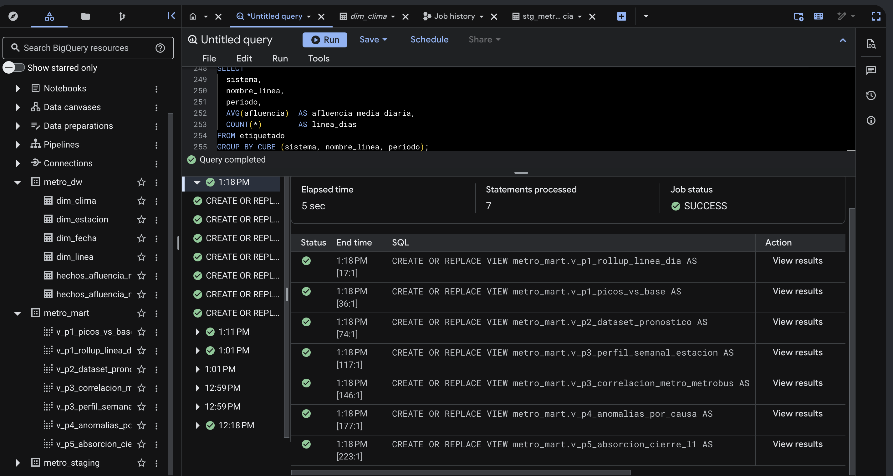
consultas_mart.sql ejecutado: 7 sentencias, SUCCESS, y las 7 vistas en metro_mart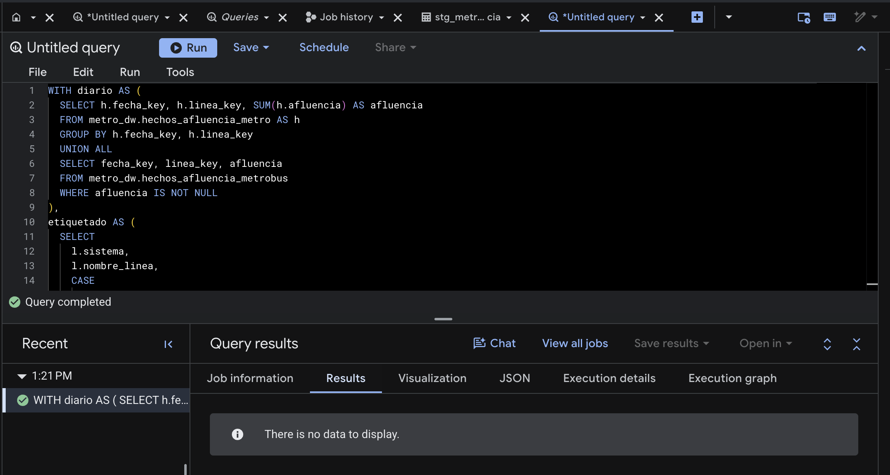
v_p5_absorcion_cierre_l1 ejecutado: corre sin error y devuelve 0 filas porque el DW todavía está vacíoLas capturas muestran que BigQuery acepta las consultas y reconoce las tablas y columnas que usan. Como el DW todavía está vacío, falta comprobar que los cálculos den los resultados esperados. Eso se revisará en E2, cuando se carguen los datos.